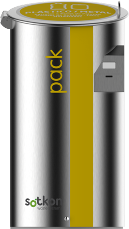
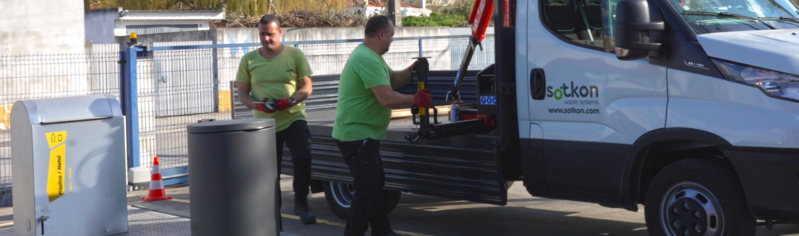

Simple and efficient
waste systems

The Sotkon Koncept
High-capacity collection points without heavy visual impact.
Sotkon systems are engineered to make municipal waste collection simpler: modular equipment, pre-assembled delivery, fast installation, safe operation and a design language that can sit naturally in historic streets, residential districts and high-traffic public space.

Installed system
Visible above ground only where the citizen interacts. Capacity lives below the street.
Waste systems
One family, multiple urban answers.

Flagship
Koncept underground system
A patented high-capacity storage system designed for simple collection, low maintenance and seamless public-space integration.
Evos
Compact, robust underground equipment where the system moves as one during collection.
Integra
Automated side-loading operation with simple mechanisms and Wi-Fi control.
Qubus
Semi-underground placement for streets with underground obstacles or harsh winters.
Oily and O+
Surface systems for cooking oil, organics and specific collection streams.
Connected operation
Hardware prepared for intelligent city management.
SOTKIS adds the operational layer: fill-level monitoring, access control and PAYT-ready data. Municipal teams can understand usage patterns and collect only when the system says collection is needed.
Ultrasonic fill-level monitoring for route planning and unnecessary-trip reduction.
RFID-based usage data by user, waste stream, time and deposit event.
Data foundation for fairer, behaviour-aware waste taxation models.

Citizen interaction
The interface is simple because the engineering is not.
Residents see a clean intake column, clear waste-stream identification and optional access control. Operators get durable equipment, serviceable mechanisms and data when the city needs a smarter waste policy.
Advantages - Operational case
Less route pressure. More capacity where people actually need it.
The commercial argument is not only cleaner streets. Sotkon changes the operating model: fewer collection trips, fewer people required per operation, less vehicle pressure and longer intervals between maintenance events.
Model
Capacity
Savings
Door-to-door
100L
baseline
Surface
1000L
5%
Underground
3000L
20%
Sotkon Koncept
3000L
30%
News
Latest company and product updates.
Events and exhibitions
Follow Sotkon presence in international waste, recycling and smart-city events.
Product updates
New system options, intake columns, Sotkis modules and operational improvements.
Installations
Project stories from municipalities, operators and public-space deployments.
Company news
Certifications, milestones and circular-economy infrastructure updates.